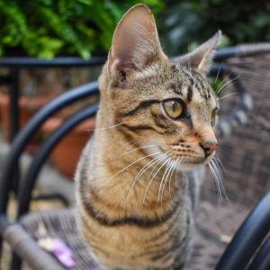
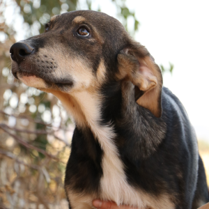
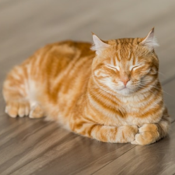
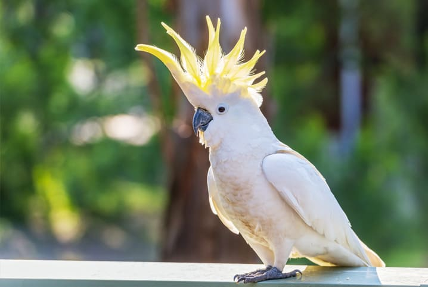
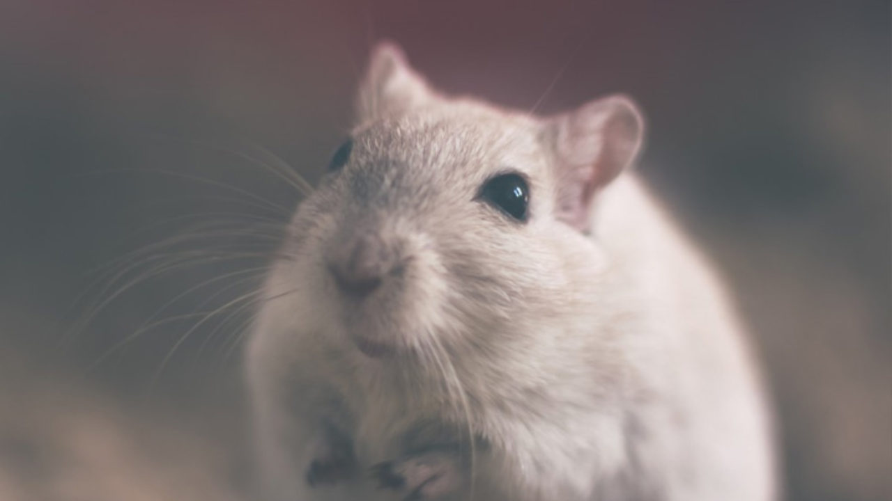
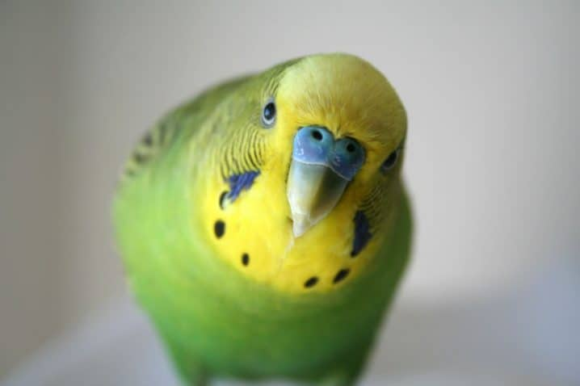
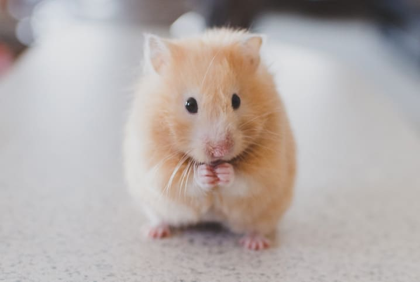
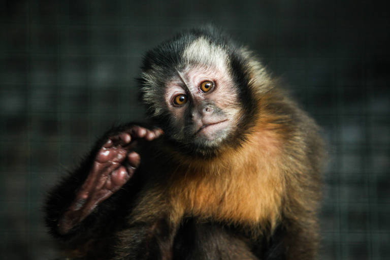
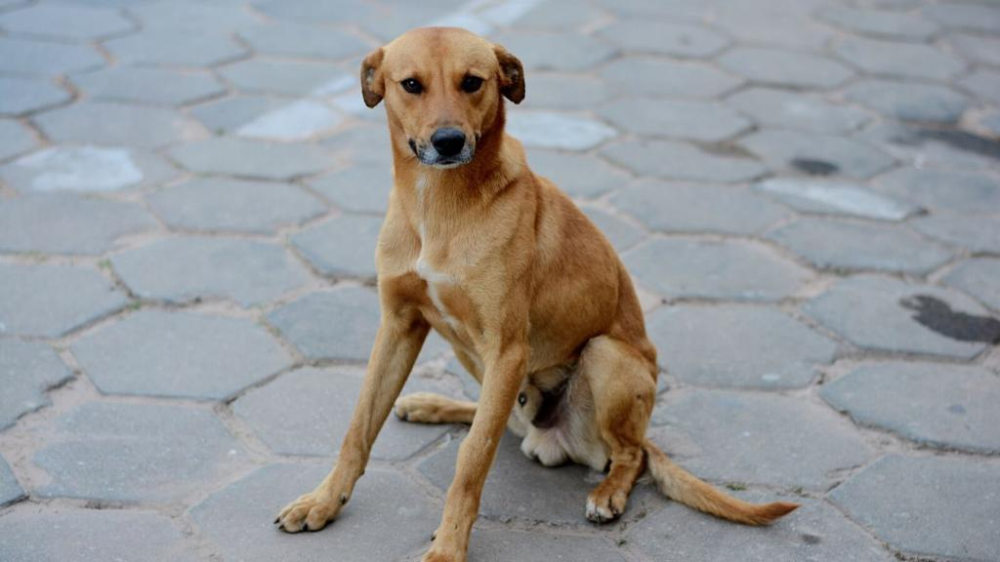

Seja qual for o miado, temos o que é necessário para deixar os gatos satisfeitos.
Raças de todos os tamanhos merecem amor e cuidado. Aqui, cada latido importa.
O lar perfeito para suas plumagens coloridas. Explore nosso mundo aviário!

Atenção dedicada para os menores membros da família. Nosso carinho por animais não conhece tamanho.

De coleiras estilosas a caminhas aconchegantes, temos tudo para um pet feliz. Crie memórias incríveis com nossos acessórios feitos para momentos especiais.

Cuide da saúde do seu pet a cada refeição com nossas rações balanceadas. Uma variedade de rações para todos os paladares e necessidades do seu animal.
Priorizamos a saúde dos seus amigos peludos. Bem-estar para seus pets terem uma longa e feliz vida.

Transforme a aparência e o ânimo do seu pet com nossos serviços de banho e tosa. Do banho relaxante à tosa personalizada, cuidamos do visual e da saúde do seu pet.
Aldo
zCleiton
Hamilton
Dagoberto
Vagner
Piquirito
Roberto
Judite
Cleide
